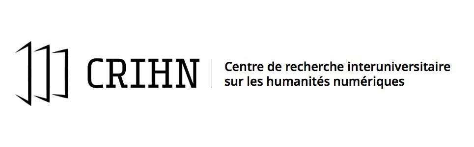

Octobre 2023 - Colloque du
CRIHN - Université
de Montréal
Margot Mellet - Université de Montréal @mellet_m
Une recherche-création d'épaisseur
Margot Mellet - Université de Montréal @mellet_m
Texte & Matériel de la présentation : https://blank.blue/conf/crihn/
« Unser Schreibwerzeug schreibt mit an unseren Gedanken. » (Lettre à Heinrich Köselitz , Nietzsche, 1882)
« Wie wir alle wissen und nur nicht sagen, schreibt kein Mensch mehr. » (« Es gibt keine Software », in Draculas Vermächtnis. Technische Schriften , Kittler, 1993)
« Our writing tools write with us on our thoughts. » (traduction personnelle effectuée à l'aide de DeepL.)
« As we all know but do not admit, no human being writes any more. » (traduction personnelle effectuée à l'aide de DeepL.)
Friedrich Kittler (mains + outils d'écriture) Source : M. Lengemann
détail
Les écritures numériques
Le banquet des humanités numériques
francophones Humanistica 2022
Ceci n'est pas une thèse sur l'Anthologie grecque
D'une plateforme à une autre Le projet
d'édition numérique collaborative de l'Anthologie grecque (CRCEN)
Des images comme des aveux
Je n'écris pas ma thèse, je la fais
Chercher/Créer où écrire
De gauche à droite : VsCodium, Github, Site Blank.blue
Thinking through making
Seminario de Tim Ingold (détail) 2012
Je ne serai ni auteure ni informaticienne
mais je serai éditrice
5 comme les doigts de la main
Fabrique
Graph Ta Thèse 2022
Machine
Perd Mens (en travail)
Média
Caligram-express 2022, Enzo Poggio
Page
Coup2D (en travail)
Matière
Mines à mues 2023